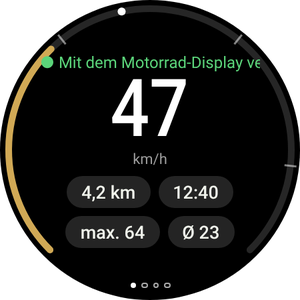
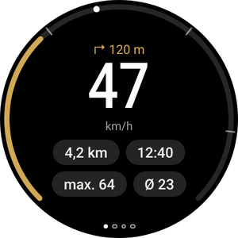
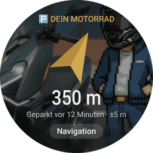
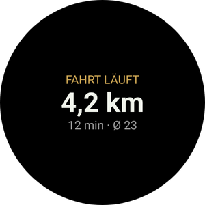
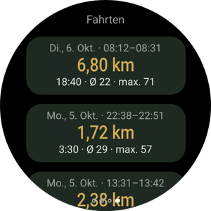
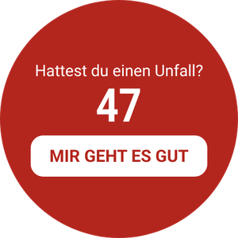
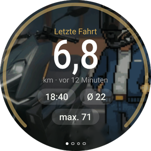
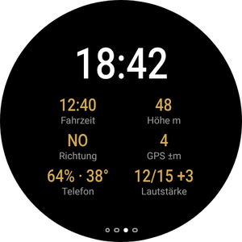

Dein Motorrad am Handgelenk
Die Wear-OS-App ist optional und arbeitet mit der Handy-App zusammen. Sie zeigt deine Geschwindigkeit und das nächste Manöver, vibriert vor jeder Abbiegung, führt dich zurück zu deinem geparkten Motorrad und lässt dich Android Auto im Display steuern, ohne das Handy anzufassen.
Du hast die Handy-App noch nicht? Fang mit der Anleitung fürs Handy an.

Was du auf der Uhr siehst






- Eine Uhr mit Wear OS 3 oder neuer: Galaxy Watch ab 4, Pixel Watch und andere. Uhren von Huawei, Amazfit und Garmin laufen nicht mit Wear OS und funktionieren nicht.
- Die Uhr bereits mit deinem Handy gekoppelt und RideScreen AA 2.2 oder neuer auf dem Handy installiert.
- Handy und Uhr im selben WLAN (zum Beispiel dem zu Hause). Nur für diese Installation nötig.
- Etwa 10–15 Minuten. Du machst es nur einmal: Spätere Versionen installierst du vom Handy aus.
Die App auf der Uhr installieren
Uhren können APK-Dateien nicht wie ein Handy öffnen, deshalb installierst du sie dieses erste Mal mit einer Handy-App, die per WLAN mit der Uhr spricht (kabelloses Debugging). Klingt technisch, sind aber nur ein paar Taps.
-
Lade die APK für die Uhr auf dem Handy herunter
Tippe auf den Button, um die APK für die Uhr direkt herunterzuladen (die auf WearOS-reloj.apk endet). Lass sie im Ordner Downloads.
Installiere außerdem eine dieser Play-Store-Apps auf dem Handy: Wear Installer 2 oder Bugjaeger.
APK für die Uhr herunterladen -
Schalte die Entwickleroptionen der Uhr ein
Galaxy Watch: Einstellungen → Info zur Uhr → Softwareinformationen → tippe 5-mal auf Softwareversion.
Pixel Watch und andere: Einstellungen → System → Info → tippe 7-mal auf Build-Nummer.
Eine Meldung sagt, dass die Entwickleroptionen aktiviert sind.
-
Verbinde die Uhr mit dem WLAN
Einstellungen → Verbindungen → WLAN: Stell es auf Ein (nicht Automatisch) und verbinde dich mit demselben Netz wie das Handy.
Wenn die Uhr später keine IP-Adresse zeigt, schalte das Bluetooth des Handys kurz aus: Die Uhr nutzt WLAN nur, wenn sie das Handy nicht per Bluetooth erreicht. -
Schalte kabelloses Debugging ein
Einstellungen → Entwickleroptionen → aktiviere ADB-Debugging und Kabelloses Debugging. Öffne Kabelloses Debugging → Neues Gerät koppeln.
Die Uhr zeigt einen 6-stelligen Code und eine Adresse mit Port, zum Beispiel 192.168.1.40:37115.
Erhöhe vorher die Bildschirmzeit der Uhr: Geht der Bildschirm beim Koppeln aus, verfällt der Code. -
Koppeln und vom Handy aus installieren
Öffne Wear Installer 2 (oder Bugjaeger), gib die Adresse und den Kopplungscode ein und verbinde dich dann mit der Adresse, die auf dem Bildschirm Kabelloses Debugging steht.
Wähle die Datei …-WearOS-reloj.apk in Downloads und installiere sie. Innerhalb einer Minute erscheint RideScreen AA auf der Uhr.
Der Port zum Koppeln und der Port zum Verbinden sind verschieden. Das ist der häufigste Fehler. -
Öffnen und Debugging ausschalten
Öffne RideScreen AA auf der Uhr und erlaube Standort (für den Kompass zu deinem Motorrad) und Benachrichtigungen.
Jetzt kannst du kabelloses Debugging und ADB-Debugging wieder ausschalten: Zum Nutzen und Aktualisieren werden sie nicht gebraucht.

Android Auto von der Uhr aus steuern
Das Display der Zontes ist kein Touchscreen. Mit der Uhr steuerst du Android Auto wie mit dem Controller eines Autos: ein Rad, um dich über den Bildschirm zu bewegen, und Tasten zum Auswählen, Zurückgehen oder um mit dem Assistant zu sprechen.
Das Steuerkreuz (zur zweiten Seite wischen)
- ▲ ▼Tippen: dreht das Rad von Android Auto und springt von Element zu Element. Halten: Pfeil nach oben oder unten.
- ◀ ▶Pfeile links und rechts: Spalte oder Tab wechseln.
- OKDas markierte Element auswählen.
- ↩Zurück.
- ⌂Start von Android Auto.
- 🎤Google Assistant („bring mich zu…“, „spiel Musik“).
- 📊Zurück zu den Fahrdaten.
Mit drehbarer Lünette oder Krone
Galaxy Watch Classic, Pixel Watch und Uhren mit drehbarer Krone.
- Dreh die Lünette oder Krone, um dich in Android Auto zu bewegen, genau wie mit dem Drehregler eines Autos. Das geht auf jeder Seite der Uhr.
- Drück OK auf dem Steuerkreuz, um auszuwählen.
- Auf der Seite Fahrten scrollt die Lünette durch die Liste, statt Android Auto zu bewegen.
Ohne Lünette
Normale Galaxy Watch (4, 5, 6, 7…) und Uhren mit flachem Bildschirm.
- Die Tasten ▲ ▼ auf dem Steuerkreuz wirken als Rad: ein Tipp, ein Schritt.
- Halte sie, wenn du einen echten Pfeil brauchst, zum Beispiel um in einer Liste nach oben zu gehen.
- Bei Galaxy Watches mit Touch-Lünette schalte sie in den Einstellungen der Uhr ein und fahr mit dem Finger am Rand des Bildschirms entlang, als wäre es die Lünette.
Die Seiten der App
Wische nach links und rechts. Die Punkte unten zeigen, auf welcher Seite du bist.

Abbiegevibrationen
Mit der Navigation von Android Auto vibriert die Uhr vor jedem Manöver: 2 Tipper für links, 3 für rechts, ein langer und N kurze für Ausfahrt N im Kreisverkehr und zwei lange fürs Wenden.
Schalte es in der Handy-App ein: ⚙️ Einstellungen → Fahr-Extras → Abbiegevibrationen auf der Uhr. Es ist experimentell.
Kachel und Komplikation
Füge die Kachel Fahrt hinzu (vom Zifferblatt wischen und + tippen), um die aktuelle Fahrt oder deinen Parkplatz zu sehen. Die Komplikation RideScreen · km bringt die km der Fahrt aufs Zifferblatt.
Die Uhr aktualisieren
-
Vom Handy aus, ohne Computer
Ab Version 2.2, wenn eine neue Version erscheint: auf dem Handy ❓ Hilfe → ⌚ Uhr-App aktualisieren → Neueste Version.
Das Handy lädt die Uhr-App herunter und schickt sie per Bluetooth. Das dauert ein paar Minuten: Du siehst den Fortschritt auf Handy und Uhr. Wenn es fertig ist, tippe auf der Uhr auf Installieren.
Beim ersten Mal bittet die Uhr dich, RideScreen AA das Installieren von Apps zu erlauben: Schalte es ein und geh zurück.
Häufige Probleme
Die Uhr zeigt keine IP-AdresseBeim Einschalten von kabellosem Debugging
- Stell das WLAN der Uhr auf Ein, nicht Automatisch, und verbinde dich mit demselben Netz wie das Handy.
- Schalte das Bluetooth des Handys kurz aus, damit die Uhr auf WLAN wechselt. Schalte es danach wieder ein.
Wear Installer verbindet sich nichtBeim Koppeln
- Nimm den Port aus Neues Gerät koppeln zum Koppeln und den vom Hauptbildschirm Kabelloses Debugging zum Verbinden. Sie sind verschieden.
- Wenn der Code abgelaufen ist, tippe erneut auf Neues Gerät koppeln: Du bekommst einen neuen.
„Paket scheint ungültig zu sein“Beim Installieren
Wahrscheinlich ist es die Handy-APK. Die Uhr braucht die, die auf WearOS-reloj.apk endet.
Die Uhr zeigt „Keine Daten vom Telefon“Mit installierter App
- Öffne RideScreen AA mindestens einmal auf dem Handy und prüfe, ob die Uhr mit dem Handy verbunden ist (App Galaxy Wearable oder Pixel Watch).
- Handy- und Uhr-App müssen von derselben Downloadseite stammen: Mit der Version aus dem Play Store oder dem originalen OpenCfMoto funktionieren sie nicht.
„⚠️ Android-Auto-Headunit-Server starten“Auf der Fahrtseite
Der Server für das Infotainmentsystem von Android Auto ist auf dem Handy aus. In Android Auto: ⋮ → Server für Infotainmentsystem starten (Schritt 6 der Anleitung fürs Handy).
„Diese Uhr erlaubt Apps nicht, Updates zu installieren“Beim Aktualisieren vom Handy
Deine Uhr erlaubt einer App nicht, eine andere zu installieren. Installiere die neue Version wie beim ersten Mal (Teil 1).
Nichts davonSo bekommst du Hilfe
Tippe auf dem Handy auf ❓ Hilfe → Protokolle teilen und schick es an die Gruppe, mit den Modellen von Uhr und Handy.
RideScreen AA ist kostenlos und Open Source, basiert auf OpenCfMoto von Alexandru (zanderp). Es ist keine offizielle App von Zontes oder Google. Die Bildschirme sind Beispiele: Die genauen Namen der Einstellungen können auf deiner Uhr abweichen. · Anleitung fürs Handy